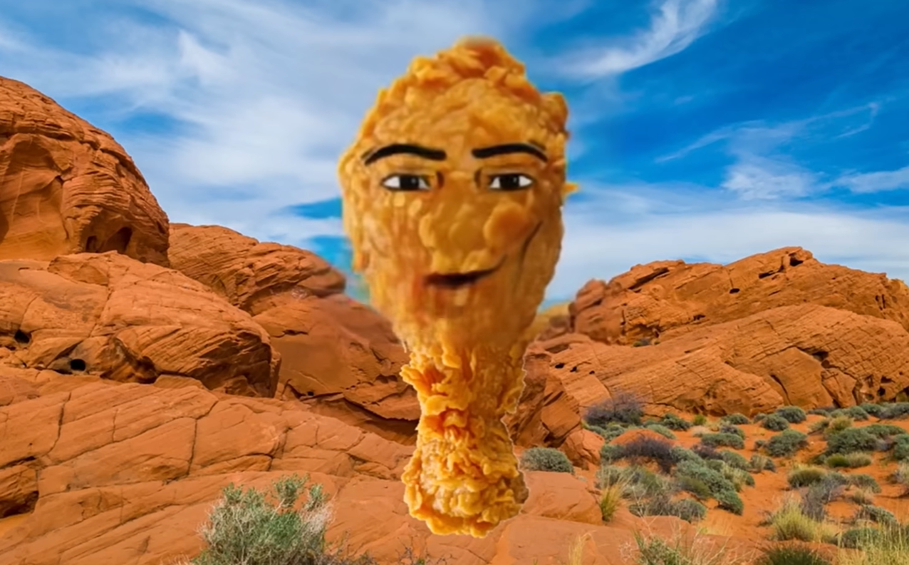

Gegagedigedagedago | 2023
Press the picture!
What is it?
This super long ridiculous-looking name of this meme is actually a lyric from the song "Cotton Eye Joe", which is the song the chicken nugget with a Roblox man face singing. The nugget would wiggle with the song and sings.
